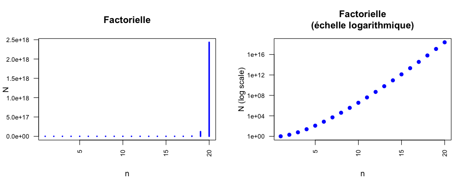

Nonmbre d’oligomères
A FAIRE: quelques explications + les formules + graphique

Jacques van Helden, revised by Lucie Khamvongsa-Charbonnier and Yvon Mbouamboua
2018-11-18
L’ADN est composé de 4 nucléotides distincts dénotés par les lettres A, C, G, T, et les protéines de 20 acides aminés.
Pour chacun de ces deux types de polymères, combien d’oligomères distincts peut-on former en polymérisant 20 résidus (“20-mères”) ?
Approche suggérée: simplifiez le problème au maximum, en commençant par des polymères beaucoup plus courts (1 résidu, 2 résidus).
Questions subsidiaires:
Il s’agit d’un tirage avec remise: à chaque position de la séquence on a le choix entre \(n\) résidus (4 pour les acides nucléiques, 20 pour les protéines).
Approche progressive de la solution
Généralisation: il existe \(n^x\) séquences distinctes de taille \(x\).
Dans notre cas, la taille des séquences \(x=20\). On a donc
Il s’agit d’une suite géométrique.
Une suite géométrique est une succession de nombres dont chaque terme est obtenu par la multiplication du terme précédent par un facteur constant.
\[x_i = x_{i-1} \cdot a\]
Pour \(n\) suffisamment grand on peut développer la formule. \[\begin{array}{cl} \\ x_n &=& x_{n-1} \cdot a \\ &=& (x_{n-2} \cdot a) \cdot a = x_{n-2} \cdot a^2 \\ & = & x_{n-3} \cdot a^3 = \ldots \\ & = & x_0 \cdot a^n & \end{array}\]
Dans notre cas, la valeur initiale \(x_0=1\); \(n\) est la taille de l’oligomère; et \(a\) est le nombre de résidus possibles à chaque position de la séquence (\(a=4\) pour les acides nucléiques, \(a=20\) pour les séquences peptidiques).
A FAIRE: quelques explications + les formules + graphique
Combien d’oligomères peut-on former (ADN ou peptides) en utilisant chaque résidu une et une seule fois ?
Approche suggérée: agrégez progressivement les résidus, en vous demandant à chaque étape combien d’entre eux n’ont pas encore été incorporés.
Questions subsidiaires:
Dans notre cas:
\[N = n! = \left\{ \begin{array}{ll} 1 & \text{if } n=0 \\ n \cdot (n-1)! &\text{otherwise} \end{array} \right.\]
Pour \(n\) suffisamment grand cela donne en clair.
\[N = n \cdot (n-1) \cdot (n-2) \ldots 2 \cdot 1\]

Nous résumons ici les formules les plus utilisées en analyse combinatoire.
On appelle arrangements les tirages ordonnés effectués sans remise au sein d’un ensemble.
Nombre d’arrangements de \(x\) éléments tirés parmi \(n\).
\[\begin{array}{ccl} A^x_n & = & \frac{n!}{(n - x)!} \\ & = & \frac{n(n-1) \ldots (n-x +1) (n - x) (n-x-1) \ldots 2 \cdot 1}{(n - x) (n-x-1) \ldots 2 \cdot 1} \\ & = & n \cdot (n-1) \cdot \ldots \cdot (n-x+1) \end{array} \]
Application typique:
tiercé dans l’ordre.
Les joueurs parient sur les trois chevaux gagnants d’une course (\(x=3\)). Pour \(n=15\) chevaux partants, il existe \(n \cdot (n-1) \cdot (n-2) = 15 \cdot 14 \cdot 13 = 2730\) possibilités.
On appelle combinaisons le nombre de sous-ensembles qu’on peut tirer sans remise dans un ensemble, sans tenir compte de l’ordre des éléments tirés.
Ce nombre est fourni par le coefficient binomial.
\[\binom{n}{x} = C^x_n = \frac{n!}{x! (n-x)!}\]
Attention: les paramètres sont placés différemment dans la première (\(binom{n}{x}\), “x parmi n”) et la seconde notation (\(C^x_n\), “choose”).
Applications typiques:
tiercé dans le désordre.
\[\binom{n}{x} = \binom{15}{3} = C^3_{15} = \frac{15!}{3! 12!} = 455\]
jeu de loto (ou lotto): chaque joueur dispose d’une grille avec 90 numéros, et doit en cocher 6. Nombre de possibilités: \[\binom{n}{x} = \binom{90}{6} = C^6_{90} = \frac{90!}{6! 84!} = 6.2261463\times 10^{8}\]
On a mené une expérience de transcriptome pour mesurer le niveau d’expression de tous les gènes de la levure. Sachant que le génome comporte 6000 gènes, combien de possibilité existe-t-il pour sélectionner les 15 gènes les plus fortement exprimés (en tenant compte de l’ordre relatif de ces 15 gènes) ?
Approche suggérée: comme précédemment, simplifiez le problème en partant de la sélection minimale, et augmentez progressivement le nombre de gènes (1 gène, 2 gènes, …).
Questions subsidiaires:
Il s’agit d’une sélection sans remise (chaque gène apparaît à une et une seule position dans la liste de tous les gènes), et ordonnée (les mêmes gènes pris dans un ordre différent sont considérés comme un résultat différent).
Lors d’une expérience de transcriptome indiquant le niveau d’expression de tous les gènes de la levure. Sachant que le génome comporte 6000 gènes, combien de possibilité existe-t-il pour sélectionner les 15 gènes les plus fortement exprimés (sans tenir compte de l’ordre relatif de ces 15 gènes) ?
Approche suggérée: comme précédemment, simplifiez le problème en partant de sélections minimales (1 gène, 2 gènes, …) et généralisez la formule.
Questions subsidiaires:
Il existe deux types classiques de tirage d’éléments au sein d’un ensemble: avec ou sans remise.
Tirage sans remise: chaque élément peut être tiré au plus une fois. Exemples:
Tirage avec remise: chaque élément peut être tiré zéro, une ou plusieurs fois. Exemples:
| Remise | Ordre | Formule | Description |
|---|---|---|---|
| Oui | Oui | \(n^x\) | Exponentielle: séquences de \(x\) éléments tirés dans un ensemble de taille \(n\), avec remise. |
| Non | Oui | \(n!\) | Factorielle: toutes les permutations d’un ensemble de taille \(n\) |
| Non | Oui | \(A^x_n = \frac{n!}{(n-x)!}\) | Arrangements : listes (ordonnée) de \(x\) éléments tirés dans un ensemble de taille \(n\) |
| Non | Non | \(C^x_n = \binom{n}{x} = \frac{n!}{x! (n - x) !}\) | Combinaisons : ensembles (non ordonnés) de \(x\) éléments tirés dans un ensemble de taille \(n\) |
On soumet un fragment d’ADN de 1 kilobase à un traitement mutagène qui provoque des mutations ponctuelles (substitutions) à 5 positions distinctes indépendantes. Combien de séquences possibles existe-t-il pour le fragment muté ?
On soumet un fragment d’ADN de 1 kilobase à un traitement mutagène qui provoque des mutations ponctuelles (substitutions) à 5 positions distinctes indépendantes. Combien de séquences possibles existe-t-il pour le fragment muté ?
Il s’agit de choisir au hasard 5 positions mutantes parmi les 1000 nucléotides du fragment d’ADN. Il s’agit d’un choix sans remise (chaque position ne peut être tirée qu’une fois), on choisit donc le coefficient binomial.
\[\binom{n}{x} = \binom{1000}{5} = C^5_{1000} = \frac{1000!}{5! 995!} = 8.2502913\times 10^{12}\]
Combien d’oligopeptides de taille 60 peut-on former en utilisant exactement 3 fois chaque acide aminé ?
Combien d’oligopeptides de taille 60 peut-on former en utilisant exactement 3 fois chaque acide aminé ?
Commençons par générer une séquence particulière qui remplit ces conditions, en concaténant 3 copies de chaque acide aminé, dans l’ordre alphabétique.
AAACCCDDDEEEFFFGGGHHHIIIKKKLLLMMMNNNPPPQQQRRRSSSTTTVVVWWWYYYToutes les permutations de ces 60 lettres sont des solutions valides. En voici trois exemples.
VWFRRWSGVCIDKHHHMFCSTMYYPAELPGKNWDGLDPIRETQKNQFSANYTEMQIVALCYYDMIRIADVSQTLVKENKMGRFIPDKHRLEHPCPAQSNFSFLHMEACTNWGWQGWVCTYFPLKEGCSYQALYIECFDTWDHMHSIDVRVQSTLFCGAWKKTHQPNNNMWIRGRVAYPMECependant, il faut prendre en compte le fait que certaines permutations sont identiques (toutes celles où l’on permute deux acides aminés identiques). La difficulté de l’exercice sera donc de dénombrer le nombre de permutations distinctes.